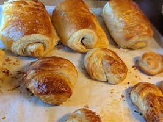
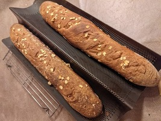
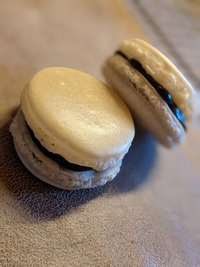
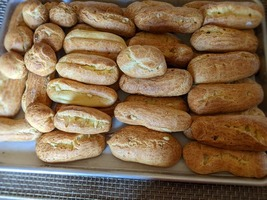
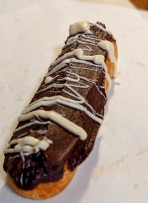
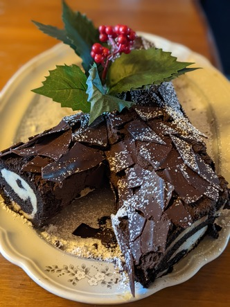

navigate
Pictures, techiques and tips
Crossiants are a french pastry made wiht bread lamentited with butter
Bagguetes are a long thin piece of bread
macarons are light chewy meruinge cookies made filled with a cream or ganache
a good techinue for making round pieces of dough for buns is to:
when decorating pastrys its imporant to be as creative as possible, good sources of inspiration cna be found in nature or in abstract art
  